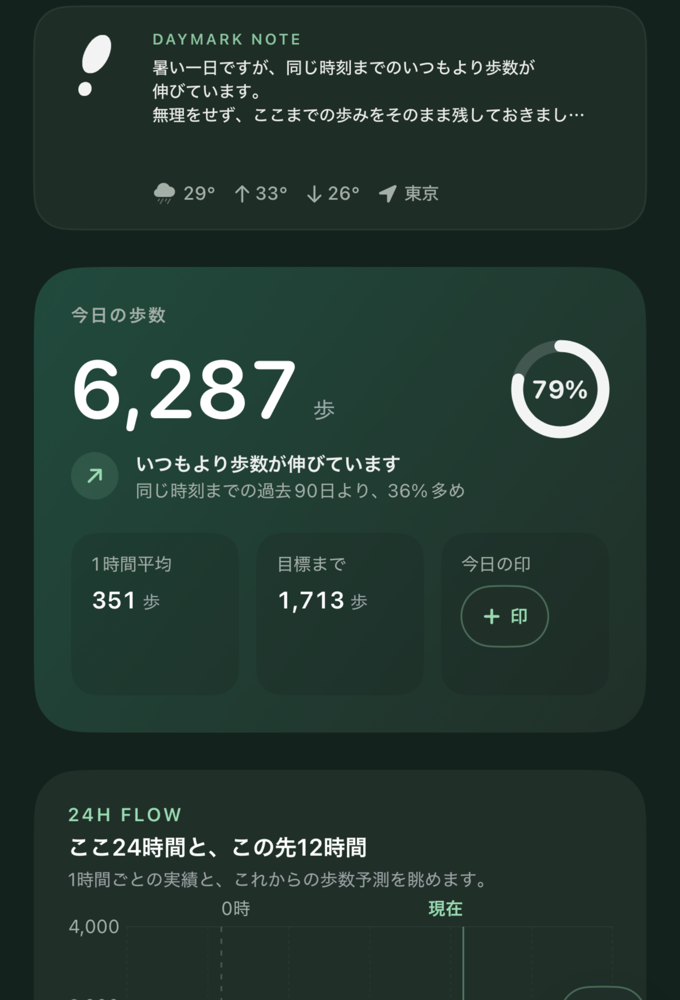
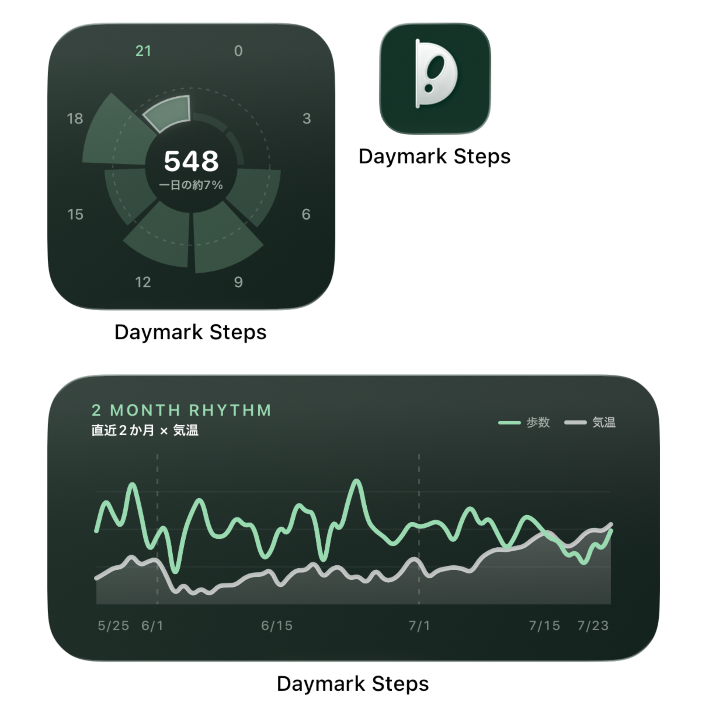
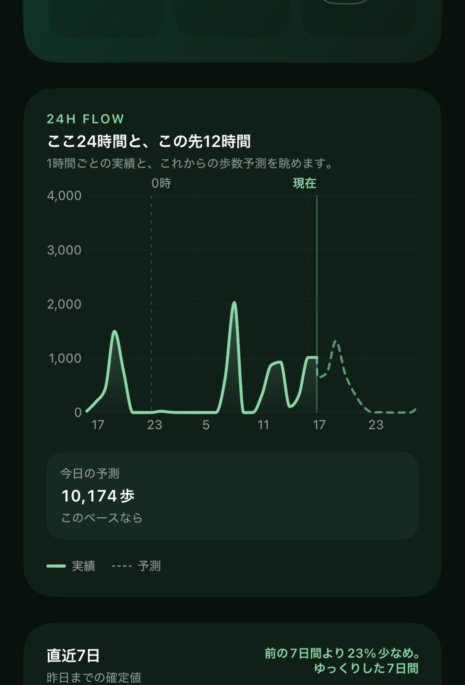

対応環境
iPhone・iOS
歩数の取得にはヘルスケアへのアクセス許可が必要です。対応OSの詳細はApp Storeをご確認ください。
iPhoneアプリ
歩数の多さだけで一日を評価せず、今日の流れや自分らしいリズムを振り返るアプリです。歩数、天気、過去の自分との比較を見渡し、その日に感じたことを小さな印として残せます。

Concept
歩けた日も、思うように歩けなかった日も、その日にはそれぞれの生活があります。数字の大小だけで判断せず、時間帯の変化や天気、過去の自分との比較から、一日の過ごし方を振り返ります。
Widgets
アプリを開かなくても、その日の歩数や最近の傾向をホーム画面で確認できます。正方形と横長のウィジェットを、暮らしに合わせて置いておけます。

24H Flow
1時間ごとの歩数実績と、これからの歩数予測をひとつのグラフに表示。数字の合計だけでは見えにくい、一日の流れを波として眺められます。

対応環境
歩数の取得にはヘルスケアへのアクセス許可が必要です。対応OSの詳細はApp Storeをご確認ください。
サポート
ご質問や不具合のご連絡は、サポートページへお送りください。
プライバシー
取得する情報と保存方法は、プライバシーポリシーでご案内しています。